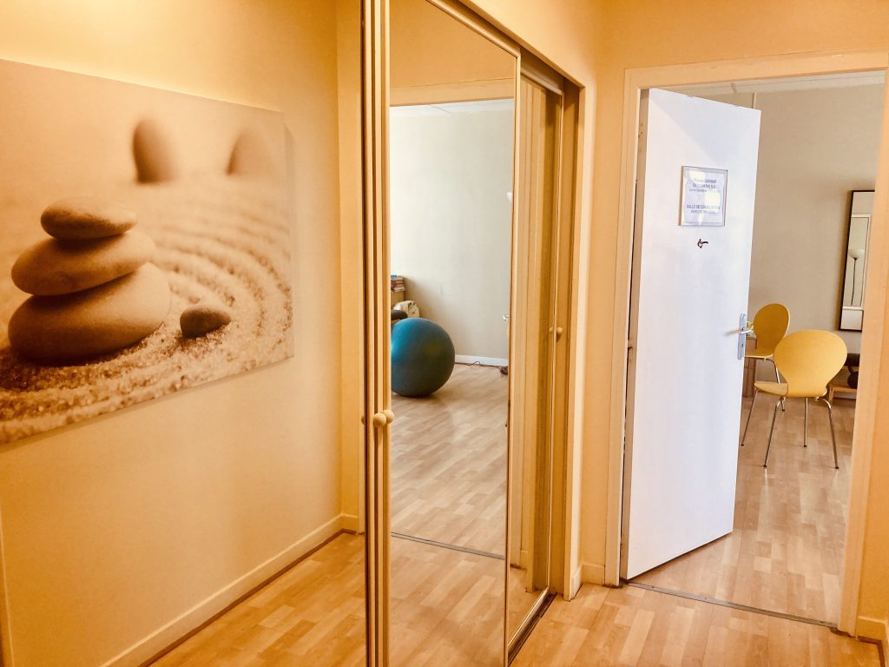

Extraits d’avis Google. Les textes anglais sont une traduction, pour les patients qui ne lisent pas le français. Les avis d’origine restent sur Google.
« Mon dos s’est bloqué d’un coup. Je ne pouvais plus m’habiller seule et, surtout, j’avais peur que ce soit grave. Thomas m’a rassurée, expliqué ce qui se passait, et grâce à son approche douce, j’ai vite retrouvé de la mobilité. Ce que j’ai aimé : il m’a aidée à comprendre ma douleur et à retrouver du pouvoir d’agir sur ma santé. »
— Hélène M.
★★★★★
Une écoute sincère
« Thomas est d’un professionnalisme rare. Une réelle connaissance des mécanismes du corps alliée à une écoute sincère. Merci ! »
— Isabelle
★★★★★
Des explications claires
« Super échange. Thomas est un vrai pédagogue : non seulement il est clair, mais il donne de précieux conseils pour se réapproprier son corps et anticiper les douleurs. »
— Willy P.
★★★★★
Une épaule qui durait depuis des mois
« Je traînais une douleur à l’épaule depuis des mois, malgré des séances ailleurs. Avec Thomas, j’ai enfin eu des explications claires sur ce que mon corps exprimait. Il a su m’écouter, adapter chaque séance à mon évolution, et surtout me redonner confiance. Le fait qu’il soit lui-même grimpeur, et pratiquant de mon sport, a aussi beaucoup aidé. Aujourd’hui la douleur a nettement diminué, et je sais mieux comment en prendre soin au quotidien. Merci Thomas ! »
— Hanna S.

Votre avis aide les suivants
Si vous avez été reçu au cabinet, un avis Google est utile à ceux qui hésitent encore.